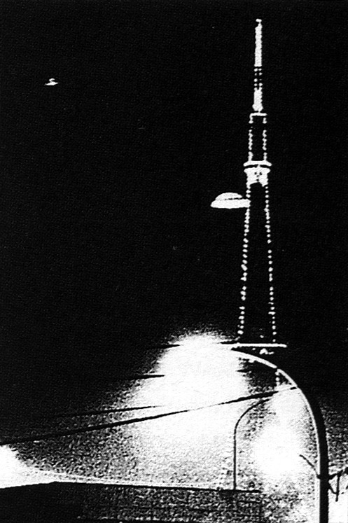

L'ovni photographié à Tokyo le 19. Une explication proposée est qu'il s'agisse du reflet du
lampadaire (en bas à droite), un des fils électriques faisant la séparation avec le "dôme" de la soucoupe
Maillot, Eric: Mystère de l'Est

A Atlanta (Georgie), alors qu'un filment une interview tôt le matin ()
avec 2 patrouilleur d'état qui avaient observé un ovni la nuit précédente, les patrouilleurs et les 3 membres de
l'équipe des actualités de Canal 5 (CBS) remarquèrent 2 lumières brillantes inhabituelles dans le ciel à l'est
"NICAP-APRO
Evaluate UFO Cases for National Enquirer Panel", NICAP UFO Investigator, février 1974.
Environ une semaine avant leur retour sur Terre,
Jack Lousma remarque par un hublot de la station Skylab un objet rougeâtre,
bien plus brillant que Jupiter, que l'équipage de la mission Skylab 3 suit pendant 5 à 10 minutes. Owen Garriott y verra lors du débriefing manifestement un satellite sur une orbite très semblable à la nôtreNASA-UAP-D007, Skylab Technical Crew Debriefing 1973, PURSUE n° 1, .
Jimmy Carter dépose au NICAP son témoignage d'observation d'un ovni .
A Tokyo (Japon) un ovni évoluant près d'un
relais de
communication de 333 m de haut est photographié (ci-contre).